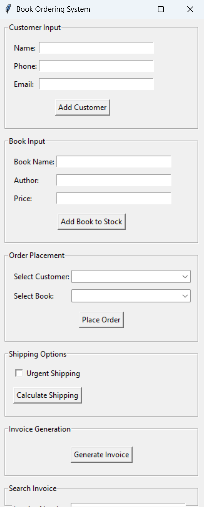

Book Ordering Application
During my problem solving and programming module, we were given assignment of creating a book ordering application. So i did it and this project successfully integrates a book ordering system, shipping cost calculation, invoice management, and GUI implementation into a single application. By incorporating OOP principles, it enhances maintainability and scalability, ensuring a well-structured and efficient solution
Requirement specification for zoo
In Sofware engineering fundamentals module, we had a group project where we had to specify the requirements of zoo and then develop a software for the zoo. I was in mobile app group and with group effort we created page for the mobile app. This was designed which would be able to purchase tickets, navigate maps, but sponsorship and membership, plan visit to zoo, etc from this mobile application.
Portfolio Website
For the web development module, I designed and built a good looking portfolio website to showcase my projects and technical skills and professional background. It has fully responsive design, has dynamic project showcase and also contact section.
Computer Networking
In computer communications module, we had to establish connections between two or more computers using packet tracer and wireshark. We had to find the best possible path for the data to be transferred. We had to learn about the OSI model which contains 7 layers and study about them in details and also study about IP adresses, subnet mask, etc.